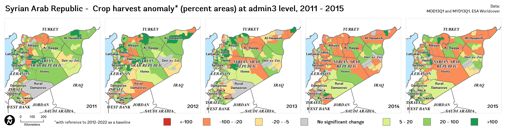
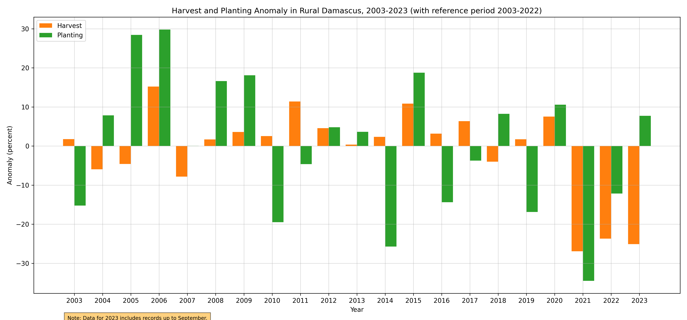
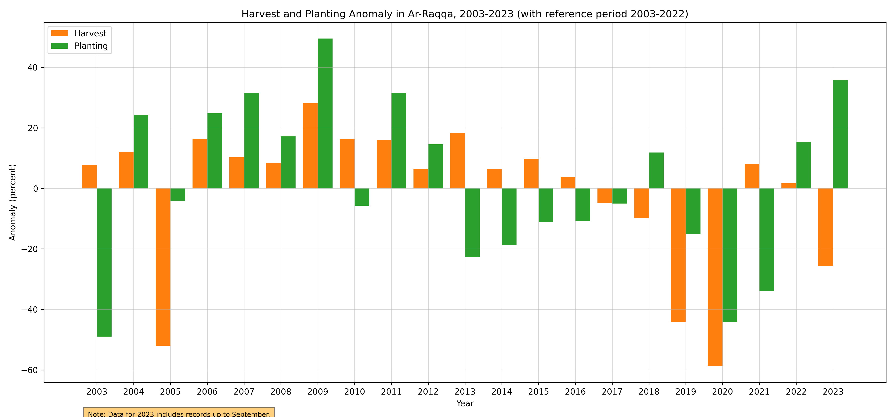

Monitoring vegetation conditions#

Figure 1. Administrative Boundary
The importance of monitoring vegetation conditions cannot be overstated, particularly in countries like Syria, where ongoing conflicts and environmental changes have had significant impacts on the landscape. Vegetation serves as an essential component of the Earth’s ecosystem, playing a crucial role in maintaining biodiversity, supporting agriculture, and regulating climate [1]. Continuous monitoring of vegetation dynamics can provide valuable insights into ecosystem health, early warnings of environmental degradation, and identify opportunities for sustainable land management practices.
Figure 2. Syria land cover.
Remote sensing techniques, such as those employed through the use of Moderate Resolution Imaging Spectroradiometer (MODIS) Terra (MOD13Q1) and Aqua (MYD13Q1) Vegetation Indices 16-day L3 Global 250m time series data, have revolutionized the way we monitor vegetation conditions [2]. By deriving variables such as ratio anomaly, difference anomaly, standardized anomaly, and vegetation condition index, these analyses enable the quantification of vegetation changes over time and across vast spatial extents.
Regular vegetation monitoring provides numerous benefits, including the ability to detect and mitigate the impacts of deforestation, land degradation, and desertification, as well as monitor crop health and inform agricultural decision-making [3]. Furthermore, such monitoring can guide policymakers in the development of adaptive strategies and environmental policies, ensuring a sustainable future for the country and its people.
Building on the foundation of monitoring vegetation conditions using MODIS MOD13Q1 and MYD13Q1 time series data, a more comprehensive understanding of vegetation dynamics in cropland areas can be achieved by incorporating phenological analysis. This is particularly important in a country like Syria, where agriculture is a vital sector for the economy and food security [4]. Accurate and timely information on crop phenology can significantly enhance agricultural management, resource allocation, and the overall resilience of the farming sector.
To achieve this, the use of TIMESAT, a software tool designed for the analysis of time series data, can be employed to extract critical phenological parameters such as the Start of Season (SOS), Mid of Season (MOS), and End of Season (EOS) from the Enhanced Vegetation Index (EVI) data [5]. By first clipping the EVI data to the cropland extent, the analysis becomes more focused on the regions of interest, ensuring that the extracted parameters are directly relevant to agricultural practices.
This phenological information can then be used to guide farmers and agricultural stakeholders in making timely and informed decisions, such as when to plant, irrigate, or harvest their crops. Moreover, it can help identify potential threats to crop health and yield, such as disease outbreaks, pest infestations, or the effects of climate change, allowing for proactive and targeted interventions. Ultimately, incorporating phenological analysis into vegetation monitoring efforts provides a more holistic and actionable understanding of the complex dynamics that govern agricultural productivity and environmental sustainability.
Data#
In this study, we utilize a range of high-quality datasets to analyze vegetation conditions and phenology within Syria’s cropland areas. The Data section introduces the sources of information employed, setting the stage for the methodologies and results presented later in the study. Our analysis incorporates EVI data from the MOD13Q1 and MYD13Q1 products and the cropland extent provided by the ESA WorldCover 2021 dataset [6]. Combining these datasets allows for a focused assessment of the agricultural landscape, enabling a deeper understanding of the factors influencing agricultural productivity and environmental sustainability in the region.
Crop extent#
We used the new ESA World Cover map 10m LULC to mask out areas which aren’t of interest in computing the EVI, i.e. built-up, water, forest, etc. The cropland class has value equal to 40, which will be used within Google Earth Engine to generate the mask.
There are many ways to download the WorldCover, as explained in the WorldCover Data Access page.

Figure 3. Cropland
Vegetation Indices#
The EVI from both MOD13Q1 and MYD13Q1 downloaded using Google Earth Engine (GEE) which involves some process:
Combine the two 16-day composites into a synthethic 8-day composite containing data from both Aqua and Terra.
Applying Quality Control Bitmask, keep only pixels with good quality.
Applying cropland mask, keep only pixels identified as a cropland based on ESA WorldCover.
Clipped for Syria and batch export the collection to Google Drive.

Figure 4. Vegetation indices, September 2023.
Climate#
Understanding the dynamics of crop growth and development in Syria requires a comprehensive approach that includes the analysis of climate data. Monthly temperature and rainfall patterns are pivotal factors influencing agricultural cycles. By integrating time-series data of these climate parameters into our analysis, we can gain deeper insights into how environmental conditions affect crop growth [7].
Temperature and rainfall are key drivers of phenological stages such as germination, flowering, and maturation. For instance, variations in monthly temperatures can significantly impact the growth rate and health of crops [8]. Warmer temperatures may accelerate growth in certain crops but can also increase evapotranspiration and water demand. On the other hand, cooler temperatures might slow down growth or even damage sensitive crops.

Figure 5. Mean temperature, September 2023.
Similarly, rainfall patterns play a crucial role in determining water availability for crops. Adequate rainfall is essential for crop survival and productivity, but excessive or insufficient rainfall can lead to adverse conditions like flooding or drought, respectively [9].

Figure 6. Accumulated rainfall, September 2023.
By analyzing these climate data alongside vegetation indices and phenological information, we can correlate climate trends with vegetation dynamics.
Monthly temperature derived from ERA5-Land, and rainfall data come from CHRIPS.
Limitations and Assumptions#
Getting VI data with good quality for all period are challenging (pixels covered with cloud, snow/ice, aerosol quantity, shadow) for optic data (MODIS). Cultivated area year by year are varies, due to MODIS data quality and crop type is not described, so the seasonal parameters are for general cropland.
At this point, the analysis is also limited to seasonal crops due to difficulty to capture the dynamics of perennial crops within a year. The value may not represent for smaller cropland and presented result are only based upon the most current available remote sensing data. As the climate phenomena is a dynamic situation, the current realities may differ from what is depicted in this document.
Ground check is necessary to ensure if satellite and field situation data are corresponding.
General approach#
We present a summary of the key derived variables employed in our analysis to monitor vegetation conditions and dynamics within Syria’s cropland areas. These variables, which are derived from the EVI data and the cropland extent, enable a comprehensive understanding of the factors influencing agricultural productivity and environmental sustainability in the region.
Note
It is important to note that the original MODIS EVI data downloaded from sources such as USGS or GEE is provided in a range of 0-10,000 to minimize storage requirements and maintain data integrity. To convert these values to their actual EVI range of 0-1, it is typically necessary to multiply the data by a scale factor of 0.0001. However, in this study, we have opted to retain the unscaled values to conserve storage space and ensure efficient data processing.
Please be aware that the derived variables and any subsequent analysis conducted in this study will be based on the original, unscaled EVI values. The results and interpretations should be considered accordingly, acknowledging that the values presented are in the 0-10,000 range rather than the conventional 0-1 EVI range. This approach does not compromise the overall analysis, but users of the data and findings should be mindful of the difference in scale when comparing the results to other studies or datasets that use the standard EVI scaling.
Vegetation-derived anomaly#
This study focuses on analyzing various EVI derived products, such as the standardized anomaly and Vegetation Condition Index (VCI). These derived products provide valuable insights into vegetation health, vigor, and responses to environmental factors like climate change and land-use practices. By examining the EVI-derived products, we can assess vegetation dynamics and identify patterns and trends that may impact ecosystems and human livelihoods.
Standardized Anomaly
The standardized anomaly is a dimensionless measure that accounts for variations in the mean and standard deviation of the time series data, allowing for a more robust comparison of anomalies across different regions or time periods. This variable can help identify abnormal vegetation conditions that may warrant further analysis or management action.
The anomaly is calculated based on difference from the average and standard deviation
"anomaly (%)" = ("evi" - "mean_evi") / "std_evi"
where evi is current EVI and mean_evi and std_evi is the long-term average and standard deviation of EVI.
Vegetation Condition Index (VCI)
The Vegetation Condition Index (VCI) is a normalized index calculated from the Enhanced Vegetation Index (EVI) data, which ranges from 0 to 100, with higher values indicating better vegetation health. By providing a concise measure of the overall vegetation condition, the VCI enables the identification of trends and patterns in vegetation dynamics and the evaluation of the effectiveness of management interventions.
To calculate the VCI, the current EVI value is compared to its long-term minimum and maximum values using the following equation:
"vci" = 100 * ("evi" - "min_evi") / ("max_evi" - "min_evi")
where evi is current EVI and min_evi and max_evi is the long-term minimum and maximum of EVI.
Phenological Metrics#
The Start of Season (SOS) and End of Season (EOS) are typically derived from EVI. These metrics are calculated using various methods that identify critical points or thresholds in the vegetation index time series data. One common approach is the Timesat software, which fits functions (e.g., logistic, asymmetric Gaussian, Savitsky-Golay, Whittaker) to the time series data to identify these points. Here’s a general overview of the approach:
Preprocessing: Detrend and smooth the vegetation index time series data to reduce noise.
Model Fitting: Fit a function (e.g., logistic, asymmetric Gaussian) to the smoothed time series data. The chosen function should adequately represent the seasonal pattern of vegetation growth and senescence.
Threshold Determination: Define thresholds for SOS, MOS, and EOS. These thresholds may be absolute values, or they may be based on a percentage of the maximum vegetation index value for the season (e.g., 20% for SOS and EOS).
Metric Calculation: Identify the points in the fitted function where the thresholds are met. These points correspond to the SOS and EOS.
SOS: The time step where the fitted function first exceeds the lower threshold, marking the start of significant vegetation growth.
EOS: The time step where the fitted function falls below the lower threshold again, signifying the end of significant vegetation growth.
Note that these metrics will depend on the choice of function, thresholds, and other methodological details. The equations for calculating SOS, MOS, and EOS may vary depending on the specific technique employed.
A how-to guideline on calculating the phenological metrics are available through Seasonality_Parameters_Data_Extraction
Workflow#
We utilized GEE to acquire a time series of EVI data. The EVI data was then processed using the ArcPy library in ArcGIS to generate long-term statistics and derive various vegetation indices products. Following this, we employed the TIMESAT software to extract seasonality parameters from the processed vegetation data.
In this study, we employed a three-step coding approach to analyze the time series EVI data and derive vegetation index products. The first step utilized GEE to efficiently batch download the time series EVI data.
The code for downloading timeseries EVI in GEE: gee-batch-export-mxd13q1.js
Following this, an ArcPy script was executed to process the acquired data and calculate long-term statistics from the time series.
The code for calculating long-term statistical value of EVI in Arcpy: modis_8daystats.py
Lastly, another ArcPy script was employed to compute various vegetation index derived products, such as the ratio, difference, standardized anomaly, and VCI.
The code for calculating derived EVI products in Arcpy: modis_viproducts.py
Result#
We present a summary of the key derived variables employed in our analysis to monitor vegetation conditions and dynamics within Syria’s cropland areas.
Anomaly and Vegetation Condition#
These variables, which are derived from the EVI data and the cropland extent, enable a comprehensive understanding of the factors influencing agricultural productivity and environmental sustainability in the region.

Figure 7. Standardized anomaly, September 2023, compared to the reference 2012-2022

Figure 8. Vegetation Condition Index, September 2023, compared to the reference 2012-2022
And below is the vegetation condition for the last 3 quarter.
Figure 9. Standardized anomaly, Q1-Q3, compared to the reference 2012-2022

Figure 10. Vegetation Condition Index, Q1-Q3 2023, compared to the reference 2012-2022
Phenological metrics#
In addition to the previously mentioned vegetation indices and derived products, this study also focuses on analyzing key phenological metrics, such as the Start of Season (SOS), Mid of Season (MOS), and End of Season (EOS). These metrics provide essential information on the timing and progression of the growing season, offering valuable insights into plant growth and development. By examining SOS, MOS, and EOS, we can assess the impacts of environmental factors, such as climate change and land-use practices, on vegetation dynamics. Furthermore, understanding these phenological patterns can help inform agricultural management strategies, conservation efforts, and policies for sustainable resource management.
Start of Season (SOS)
The SOS is a critical phenological metric that represents the onset of the growing season. By analyzing the timing of SOS, we can gain insights into how environmental factors, such as temperature and precipitation, impact vegetation growth and development. Understanding the SOS is vital for agricultural planning, as it can inform planting and harvesting schedules, irrigation management, and help predict potential yield outcomes.

Figure 11. Start of Season, Jan - Sep 2023, Season 1

Figure 12. Start of Season, Jan - Sep 2023, Season 2
End of Season (EOS)
The EOS is an important phenological marker signifying the conclusion of the growing season. Investigating the timing of EOS can reveal valuable information about the duration of the growing season and the overall performance of vegetation. EOS trends can help us understand how factors such as temperature, precipitation, and human-induced land-use changes impact ecosystems and their productivity. Information on EOS is also crucial for agricultural management, as it aids in planning harvest schedules and post-harvest activities, and supports the development of informed land management and conservation policies.

Figure 13. End of Season, Jan - Sep 2023
Supporting Evidence and Visual Insights#
This section offers a comprehensive visual exploration of agricultural activities, emphasizing the spatial and temporal dynamics of cultivation in Syria. This chapter presents a series of maps and charts that elucidate the extent of cultivated areas in comparison to historical crop extents, as well as the patterns and timelines of crop planting and harvesting on both monthly and annual scales.
Our analysis includes a historical perspective, showcasing the changes in agricultural practices over three distinct periods: 2011-2015, 2016-2020, and 2021-2023. This temporal segmentation allows us to observe trends and shifts in agricultural activities, providing insights into how external factors like climate change, policy shifts, and economic conditions may have influenced farming practices over the last decade.
The visualizations are presented at both the national level and the administrative level 1 (admin1), offering a broad overview as well as more localized insights. While our data extends to admin3 level, allowing for detailed, granular analysis, the focus on higher administrative levels ensures clarity and accessibility in understanding the broader trends and patterns.
Key features of this section include:
Comparative Maps of Cultivation Extent: These maps compare the actual cultivated areas with the historical extents of crops, highlighting regions of expansion or reduction in agricultural land use.
Visualization of Agricultural Changes: The use of maps to visualize agricultural data across different time periods, aiding in the identification of spatial patterns and regional differences in agricultural activities.
Temporal Aggregation of Crop Cycles and Climate: Charts that aggregate planting and harvesting data on monthly and annual bases and the trend of rainfall and temperature over the area, providing a clear view of the agricultural calendar and its variations over the years.
Analysis of Planting and Harvesting Trends: An examination of how the timing of planting and harvesting deviates from historical averages, offering insights into the evolving nature of agricultural practices in response to various influencing factors.
This section serves as a valuable supplement to the primary results, offering an enriched perspective on the state and evolution of agriculture in Syria. It is intended to support researchers, policymakers, and stakeholders in understanding the complex dynamics of agricultural land use and management.
Comparative Maps of Cultivation Extent#
The analysis encompasses a detailed examination of the annual cultivated land in Syria over three distinct periods: 2011-2015, 2016-2020, and 2021-2023. These comparative maps provide a visual representation of the temporal changes in agricultural practices, focusing on both planting and harvest phases.
Planting Phase Analysis (2011-2023): The map for this period reveals the spatial distribution and extent of land preparation and planting activities. It helps in understanding the initial stages of agricultural cycles and how they have evolved over time.
Figure 14. Cultivated land, 2011-2015
Figure 15. Cultivated land, 2016-2020
Figure 16. Cultivated land, 2021-2023
Harvest Phase Analysis (2011-2023): This map illustrates the areas where harvesting activities were predominant, offering insights into the culmination of agricultural cycles. It aids in assessing the productivity and end results of farming practices during this period.
Figure 17. Cultivated land, 2011-2015

Figure 18. Cultivated land, 2016-2020

Figure 19. Cultivated land, 2021-2023
Visualization of Agricultural Changes: Trends and Anomalies in Planting and Harvest#
This section delves into the annual trends and anomalies in planting and harvest areas across Syria for the periods 2011-2015, 2016-2020, and 2021-2023, with a particular focus on the admin3 level. By examining these trends, we gain a nuanced understanding of how agricultural activities have evolved over time in specific regions.
Annual Trends in Planting and Harvest Areas: These visualizations showcase the yearly fluctuations in the extent of cultivated lands during the planting and harvesting phases. They reveal patterns, consistencies, or irregularities in agricultural practices across different regions, providing insights into the stability and adaptability of the agricultural sector.
Planting areas
Figure 20. Planting areas, 2011-2015
Figure 21. Planting areas, 2016-2020
Figure 22. Planting areas, 2021-2023
Harvest areas
Figure 23. Harvest areas, 2011-2015
Figure 24. Harvest areas, 2016-2020
Figure 25. Harvest areas, 2021-2023
Percent Anomalies in Planting and Harvest Areas: The analysis of anomalies offers a deeper perspective on the deviations from expected or average agricultural activities. By highlighting regions with significant deviations, these charts help in identifying areas that may be experiencing changes due to environmental factors, policy shifts, or other influences.
Planting anomaly
Figure 26. Planting anomaly, 2011-2015
Figure 27. Planting anomaly, 2016-2020
Figure 28. Planting anomaly, 2021-2023
Harvest anomaly

Figure 29. Harvest anomaly, 2011-2015
Figure 30. Harvest anomaly, 2016-2020
Figure 31. Harvest anomaly, 2021-2023
Temporal Aggregation of Crop Cycles and Climate: A Multi-Level Analysis#
This section presents a comprehensive analysis of planting and harvest cycles in conjunction with climate data, spanning from 2003 to 2023. The focus is on both national (admin0) and governorate (admin1) levels, offering a layered understanding of agricultural patterns in relation to environmental factors.
Annual and Monthly Planting and Harvest Trends: Line plots illustrate the fluctuations in the areas of planting and harvest throughout the years. These visualizations trace the seasonal and annual variations, providing a clear picture of the agricultural calendar and its evolution over the past two decades.
National aggregate
Figure 32. Annual Harvest and Planting, 2003-2023
Figure 33. Monthly Harvest and Planting, 2003-2023
Governorate aggregate
Annual Harvest and Planning
Figure 34. Annual Harvest and Planting, 2003-2023
Figure 35. Annual Harvest and Planting, 2003-2023
Figure 36. Annual Harvest and Planting, 2003-2023
Figure 37. Annual Harvest and Planting, 2003-2023
Figure 38. Annual Harvest and Planting, 2003-2023
Figure 39. Annual Harvest and Planting, 2003-2023
Figure 40. Annual Harvest and Planting, 2003-2023
Figure 41. Annual Harvest and Planting, 2003-2023

Figure 42. Annual Harvest and Planting, 2003-2023
Figure 43. Annual Harvest and Planting, 2003-2023
Figure 44. Annual Harvest and Planting, 2003-2023

Figure 45. Annual Harvest and Planting, 2003-2023
Figure 46. Annual Harvest and Planting, 2003-2023
Figure 47. Annual Harvest and Planting, 2003-2023
Monthly Harvest and Planning
Figure 48. Monthly Harvest and Planting, 2003-2023
Figure 49. Monthly Harvest and Planting, 2003-2023
Figure 50. Monthly Harvest and Planting, 2003-2023
Figure 51. Monthly Harvest and Planting, 2003-2023
Figure 52. Monthly Harvest and Planting, 2003-2023
Figure 53. Monthly Harvest and Planting, 2003-2023

Figure 54. Monthly Harvest and Planting, 2003-2023
Figure 55. Monthly Harvest and Planting, 2003-2023
Figure 56. Monthly Harvest and Planting, 2003-2023
Figure 57. Monthly Harvest and Planting, 2003-2023
Figure 58. Monthly Harvest and Planting, 2003-2023

Figure 59. Monthly Harvest and Planting, 2003-2023
Figure 60. Monthly Harvest and Planting, 2003-2023
Figure 61. Monthly Harvest and Planting, 2003-2023
Correlation with Precipitation and Temperature: By integrating climate data, specifically monthly and annual records of precipitation and temperature, the analysis draws connections between climatic conditions and agricultural activities. This aspect is crucial in understanding how changing weather patterns impact the timing and success of crop cycles.
National aggregate
Figure 62. Annual Rainfall and Temperature, 2003-2023
Figure 63. Monthly Rainfall and Temperature, 2003-2023
Governorate aggregate
Annual Rainfall and Temperature
Figure 64. Annual Rainfall and Temperature, 2003-2023
Figure 65. Annual Rainfall and Temperature, 2003-2023
Figure 66. Annual Rainfall and Temperature, 2003-2023
Figure 67. Annual Rainfall and Temperature, 2003-2023
Figure 68. Annual Rainfall and Temperature, 2003-2023
Figure 69. Annual Rainfall and Temperature, 2003-2023

Figure 70. Annual Rainfall and Temperature, 2003-2023
Figure 71. Annual Rainfall and Temperature, 2003-2023
Figure 72. Annual Rainfall and Temperature, 2003-2023
Figure 73. Annual Rainfall and Temperature, 2003-2023
Figure 74. Annual Rainfall and Temperature, 2003-2023

Figure 75. Annual Rainfall and Temperature, 2003-2023
Figure 76. Annual Rainfall and Temperature, 2003-2023
Figure 77. Annual Rainfall and Temperature, 2003-2023
Monthly Harvest and Planning
Figure 78. Monthly Rainfall and Temperature, 2003-2023
Figure 79. Monthly Rainfall and Temperature, 2003-2023
Figure 80. Monthly Rainfall and Temperature, 2003-2023

Figure 81. Monthly Rainfall and Temperature, 2003-2023
Figure 82. Monthly Rainfall and Temperature, 2003-2023
Figure 83. Monthly Rainfall and Temperature, 2003-2023
Figure 84. Monthly Rainfall and Temperature, 2003-2023
Figure 85. Monthly Rainfall and Temperature, 2003-2023

Figure 86. Monthly Rainfall and Temperature, 2003-2023
Figure 87. Monthly Rainfall and Temperature, 2003-2023
Figure 88. Monthly Rainfall and Temperature, 2003-2023

Figure 89. Monthly Rainfall and Temperature, 2003-2023
Figure 90. Monthly Rainfall and Temperature, 2003-2023
Figure 91. Monthly Rainfall and Temperature, 2003-2023
Planting and Harvesting Trends: National-Regional Perspectives and Anomalies#
This section delves into the analysis of annual and monthly trends in planting and harvesting across Syria from 2003 to 2023. It employs a dual approach of bar plots and heatmaps to convey the nuances of agricultural activities over two decades.
Annual Trends in Planting and Harvesting: Bar plots are utilized to illustrate the year-on-year variations in planting and harvesting areas. These visual representations offer a clear, comparative view of the annual changes, highlighting any significant increases or decreases in agricultural activities.
Figure 92. Annual Harvest and Planting Anomaly, 2003-2023
Figure 93. Annual Harvest and Planting Anomaly, 2003-2023
Figure 94. Annual Harvest and Planting Anomaly, 2003-2023

Figure 95. Annual Harvest and Planting Anomaly, 2003-2023
Figure 96. Annual Harvest and Planting Anomaly, 2003-2023
Figure 97. Annual Harvest and Planting Anomaly, 2003-2023
Figure 98. Annual Harvest and Planting Anomaly, 2003-2023
Figure 99. Annual Harvest and Planting Anomaly, 2003-2023
Figure 100. Annual Harvest and Planting Anomaly, 2003-2023
Figure 101. Annual Harvest and Planting Anomaly, 2003-2023
Figure 102. Annual Harvest and Planting Anomaly, 2003-2023

Figure 103. Annual Harvest and Planting Anomaly, 2003-2023

Figure 104. Annual Harvest and Planting Anomaly, 2003-2023
Figure 105. Annual Harvest and Planting Anomaly, 2003-2023
Figure 106. Annual Harvest and Planting Anomaly, 2003-2023
Monthly Anomaly Heatmaps: To capture the subtleties of monthly fluctuations, heatmaps are presented, showcasing the anomalies in planting and harvesting areas. These heatmaps provide a visual representation of the deviations from the average, making it easier to spot patterns, irregularities, or shifts in the agricultural calendar.
Figure 107. Monthly Harvest and Planting Anomaly, 2003-2023
Figure 108. Monthly Harvest and Planting Anomaly, 2003-2023
Figure 109. Monthly Harvest and Planting Anomaly, 2003-2023
Figure 110. Monthly Harvest and Planting Anomaly, 2003-2023

Figure 111. Monthly Harvest and Planting Anomaly, 2003-2023
Figure 112. Monthly Harvest and Planting Anomaly, 2003-2023
Figure 113. Monthly Harvest and Planting Anomaly, 2003-2023
Figure 114. Monthly Harvest and Planting Anomaly, 2003-2023
Figure 115. Monthly Harvest and Planting Anomaly, 2003-2023
Figure 116. Monthly Harvest and Planting Anomaly, 2003-2023
Figure 117. Monthly Harvest and Planting Anomaly, 2003-2023

Figure 118. Monthly Harvest and Planting Anomaly, 2003-2023

Figure 119. Monthly Harvest and Planting Anomaly, 2003-2023
Figure 120. Monthly Harvest and Planting Anomaly, 2003-2023
Figure 121. Monthly Harvest and Planting Anomaly, 2003-2023
Potential Application#
Above products provides an important starting point for continuous monitoring of the crop planting status. Continuous monitoring could inform the following assessments:
How many districts are behind in planting? If there is a delay in some districts, and is planting acceleration necessary?
How many hectares are available for the next season?
Is the current harvest enough for domestic consumption?
Decision makers also need phonological data to decide on resource allocation issues or policy design:
Planting potential for the next months: assigning the distribution of agricultural inputs.
Mobilization of extension workers to monitor and implement mitigation strategies: adjustment of irrigation system in anticipation of drought or flood, pest control of infestation/disease to avoid crop failure, reservoir readiness for planting season.
Preparation of policy recommendations: assess ongoing situation, harvest estimate, price protection.
This information is necessary for both policy makers, farmers, and other agricultural actors (cooperatives, rural businesses). Negative consequences can be anticipated months ahead and resources can be prioritized on areas with higher risk or greater potential.
References#
Myneni, R., Keeling, C., Tucker, C. et al. Increased plant growth in the northern high latitudes from 1981 to 1991. Nature 386, 698–702 (1997). https://doi.org/10.1038/386698a0
C. O. Justice et al., “The Moderate Resolution Imaging Spectroradiometer (MODIS): land remote sensing for global change research,” in IEEE Transactions on Geoscience and Remote Sensing, vol. 36, no. 4, pp. 1228-1249, July 1998, https://doi.org/10.1109/36.701075
Food and Agriculture Organization of the United Nations (FAO). (2016). State of the World’s Forests 2016. Rome. https://www.fao.org/publications/sofo/2016/en/
World Bank. (2019). The World Bank in Syria. https://www.worldbank.org/en/country/syria/overview
Jönsson, P., & Eklundh, L. (2004). TIMESAT—a program for analyzing time-series of satellite sensor data. Computers & Geosciences, 30(8), 833–845. https://doi.org/10.1016/j.cageo.2004.05.006
Zanaga, D., Van De Kerchove, R., Daems, D., De Keersmaecker, W., Brockmann, C., Kirches, G., Wevers, J., Cartus, O., Santoro, M., Fritz, S., Lesiv, M., Herold, M., Tsendbazar, N.E., Xu, P., Ramoino, F., Arino, O., 2022. ESA WorldCover 10 m 2021 v200. https://doi.org/10.5281/zenodo.7254221
Peel, M. C., Finlayson, B. L., and McMahon, T. A.: Updated world map of the Köppen-Geiger climate classification, Hydrol. Earth Syst. Sci., 11, 1633–1644, https://doi.org/10.5194/hess-11-1633-2007, 2007
Porter John R and Semenov Mikhail A 2005Crop responses to climatic variation. Phil. Trans. R. Soc. B. 360:2021–2035. http://doi.org/10.1098/rstb.2005.1752
Rockström, J., & Falkenmark, M. (2000). Semiarid crop production from a hydrological perspective: Gap between potential and actual yields. Critical Reviews in Plant Sciences, 19(4), 319-346. https://doi.org/10.1080/07352680091139259